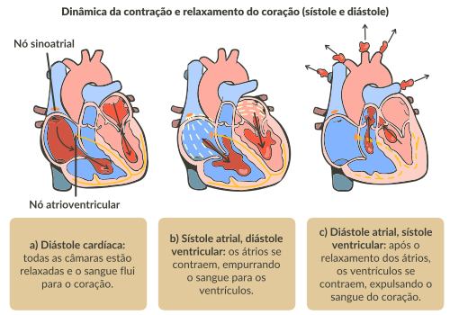

Assim, o sangue passa aos ventrículos que, cheios de sangue, recebem a corrente elétrica originada no nó sinoatrial, conduzida pelo nó atrioventricular, e iniciam a contração e a ejeção do sangue para a aorta ou a artéria pulmonar. Nesse momento, as válvulas atrioventriculares se fecham para impedir o refluxo de sangue para os átrios, que se relaxam para receber novamente o sangue venoso.
